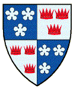
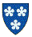
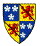
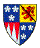
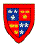
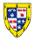
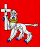

Fraser of Lovat |
|||
|  | |||
The first of the Scottish family of Fraser appeared in the Borders during the 12th century. Their history can be accessed in a separate file which continues their story to the point where the ancestry of the Frasers of Philorth and the Frasers of Lovat divides.
The early lines of descent are uncertain, owing to the destruction of so many charters during the wars of independence, and the line given here down to Hugh Fraser, the 1st Lord Fraser of Lovat, remains to some extent speculative. Readers cross-referencing to other records should be aware that many previous writers, not understanding the difference between the feudal title "Lord of Lovat" and the peerage title "Lord Fraser of Lovat" (or "Lord Lovat" as it is commonly used since the creation of the new title of Baron Lovat of Lovat), have muddled their numbering of the succession. (The difference is explained in the essay on feudal titles.) Further uncertainty was created by the forfeit and subsequent restoration of the honours, as described below, and by the creation in the nineteenth century of that additional United Kingdom peerage title of Baron Lovat of Lovat. (All the editions of Burke's Peerage up to and including 1970 have the Lovat entry hopelessly confused. Researchers using that book should read the essay explaining the Lovat errors.)
The Gaelic name for the Chief of the Frasers of Lovat, MacShimi (written sometimes as Mac Simi and sometimes as MacShimidh) means son of Simon, and this Simon is believed to be the Simon Fraser of Brotherton who married the eventual heiress of the Lovat lands previously held by Sir David Grahame of Lovat and, earlier, by the Byssets. The Beaufort lands of the Byssets were reunited with the Lovat lands when their eventual heiress, Janet de Fenton, married into the Frasers in 1425.
The third son of Andrew Fraser, Sheriff of Stirling, by Beatrix:
Simon Fraser of Brotherton, Knight, Sheriff of Kincardine 1317, 1st (Fraser) Lord of Lovat (the feudal title), m Margaret dtr of John, Earl of Orkney and Caithness, whose wife may have been the dtr and was the eventual heiress of Sir David Grahame, Lord of Lovat, and with two of his brothers was k 1333 at the battle of Halidon Hill, having had issue with another son and a dtr:
..A1 Simon Fraser, Knight, Lord of Lovat, reported by Froissart to have been in the group that captured Edinburgh Castle in 1341 by stratagem. He fought at the battle of Durham and d unm of his wounds 1346.
..A2 Alexander, his heir [see below]
The heir:
Alexander Fraser, Knight, Lord of Lovat, m a dtr of Sir Andrew Moray of Bothwell and d having had issue:
..A1 Hugh, his heir [see below]
The only known child:
Hugh Fraser, Lord of Lovat, Baron of Kynnell and of Linton, resigned in 1377, together with the feudal barony of Linton, the last of his lands in Tweeddale, m Isobel dtr of Sir John Wemyss of Leuchars by his 2nd wife Isabel, dtr of Sir Alan Erskine of Inchmartin, and d ca 1409 having had issue:
..A1 Alexander Fraser, Lord of Lovat, m 1st Elizabeth Keith, d ante April 1414, m 2nd Marion dtr of Sir Robert Keith, resigned his lands to his brother ca 1410 and retired to the Priory of Beauly. In addition to an illegitimate son, Gil Rewach Vickhimi, he had by his 1st wife issue:
....b1. Marjorie Fraser, may have m as 1st wife ca 1414 Sir William de Keith, Marischal of Scotland, but there has been confusion of name here, "Marjorie" being a name different from "Mariota" the diminutive of Mary, the name of a known wife of the Marischal and the mother of his children.
..A2 Hugh, his heir [see below]
..A3 William Fraser, m an heiress of the Scrymgeour family and lived in Dundee
..a1. Euphemia (Agnes) Fraser, m 1st Lachlan Macintosh, Captain of Clan Chattan, and m 2nd Sir Walter Innes of that Ilk
The heir:
Hugh Fraser, Lord of Lovat, High Sheriff of Inverness-shire 1431, b ca 1376, m 1425 as his 1st wife Janet (d ante Dec 1429), sister of William de Fenton of Beaufort. He m as his 2nd wife ante Dec 1429 Isabel dtr of Sir John Wemyss of Wemyss and d ante July 1440 having had issue by his 1st wife:
..A1 Thomas Fraser of Lovat
..A2 Hugh, his heir [see below]
..a1. Elizabeth Fraser, mas 1st wife Sir William Leslie of Balquhain
The second son:
Hugh Sanctus Fraser, Lord of Lovat, b ca 1417, m Janet dtr of Thomas Dunbar, 2nd Dunbar Earl of Moray, and d ca 1450 leaving issue:
..A1 Hugh, his heir [see below]
The heir:
Hugh Fraser, Lord of Lovat, created ante 1464 Lord Fraser of Lovat in the Peerage of Scotland, m ante 1464 Violet dtr of John Lyon, 3rd Lord Glamis by Elizabeth dtr of Sir John Scrimgeour of Dudhope, and d ca 1500 leaving issue:
..A1 Thomas, his heir [see below]
..A2 Hugh Fraser, k 1513 at the battle of Flodden
..A3 John Fraser, Rector of Dingwall, member of the King's Council
..a1. Margaret Fraser, m Hector de Kilmalew
..a2. Agnes Fraser, m Sir Kenneth Mackenzie of Kintail
..a3. Egidia (Marjory) Fraser, m Ferquherd Mackintosh of Mackintosh
The heir:
Thomas Fraser, 2nd Lord Fraser of Lovat, Justiciary of the North, b ca 1461, m 1493 as his 1st wife, Janet (d 1503) dtr of Sir Alexander Gordon of Abergeldie by Beatrice dtr of Sir William Hay, 1st Earl of Erroll, and had issue:
..A1 Hugh, his heir [see below]
..A2 William Fraser of Teachers
..A3 James Fraser of Foyness, k at the battle of Loch Lochy, ancestor of the Frasers of Culbokie
..a1. Margaret Fraser
..a2. Isobel Fraser
..a3. Janet Fraser, m ca 1527 John Crichton of Ruthven, son of James Crichton of Ruthven by his wife Janet Ogston
He m 1506 as his 2nd wife, Janet (who m 3rdly, as his 1st wife, David Lindsay of Edzell, later 9th Earl of Crawford), widow of Alexander Blair of Balthayock and dtr of Andrew, 2nd Lord Gray, and d 21 Oct 1524, having by her had further issue:
..A4 Robert Fraser, m Janet Gelly and was the ancestor of the Frasers of Kinnell
..A5 Andrew Fraser, reported to have m a dtr of the Laird of Grant, but nothing else is known
..A6 Thomas Fraser, reported to have m Anna, a dtr of Macleod of Harris
..A7
The eldest son:
Hugh Fraser, 3rd Lord Fraser of Lovat, Justiciary of the North for Queen Mary, b 1494, resigned his lands to the King for a charter with a new destination in 1539, m as his 1st wife Anne, widow of John Haliburton of Pitcur and dtr of John Grant of Grant and Freuchie by Margaret dtr of Sir James Ogilvy of Deskford, and had issue:
..A1 Hugh, Master of Lovat, k with his father at Loch Lochy 1544, sp, after his stepmother had taunted him to make him disobey his father's orders and join the battle (and thus to allow her own son to inherit if he died).
He m 2ndly, Janet dtr of Walter Ross of Balnagowan, and with his eldest son was k fighting the Macdonalds at Loch Lochy 15 July 1544, having by her had issue:
..A2 Alexander, his heir [see below]
..A3 William Fraser of Struy, b ca 1537, m 1561 Janet, a dtr of the Laird of Grant
..A4 Hugh Fraser, b ca 1539
..a1. Agnes Fraser, m ante 3 Mar 1540/1 as her 1st husband, William Macleod of Macleod, 9th Chief of Macleod (d 1551), and m as her 2nd husband, Alexander Bayne of Tulloch. She d 29 Jan 1594/5.
..a2. Margaret Fraser
The heir:
Alexander Fraser, 4th Lord Fraser of Lovat, m Janet (who m 2ndly Donald McDonald of Sleat) dtr of Sir John Campbell of Cawdor, 3rd son of Archibald Campbell, 2nd Earl of Argyll, and d at Iona Dec 1557 having had issue:
..A1 Hugh [see below]
..A2 Thomas Fraser of Knockie and 1st of Strichen [see separate article]
..A3 James Fraser of Ardachy mand had issue
..a1. Anne Fraser m John Fraser of Dalcross.
The heir:
Hugh Uisdean Ruadh Fraser, 5th Lord Fraser of Lovat, m 24 Dec 1567 Elizabeth (who m 2nd 1578 Robert Stuart [previously Bishop of Caithness], Earl of Lennox and subsequently Earl of March [but divorced him for impotency], and m 3rd 1581 James Stewart, Earl of Arran) dtr of John Stewart, 4th Earl of Atholl by his wife Elizabeth dtr of George Gordon, 4th Earl of Huntly, and d 1 Jan 1576/7 leaving issue:
..A1 Alexander Fraser, Master of Lovat, din infancy
..A2 Simon, his heir [see below]
..A3 Thomas Fraser, Prior of Beauly 26 Nov 1579 d aged 8
..a1. Elizabeth m Alexander Dunbar of Westfield, Sheriff of Moray
..a2. Margaret Fraser
..a3. Mary Fraser, mJ ames Cumming of Altyre
..a4. Anna Fraser, m Hector Munro of Foulis
The heir:
Simon Fraser, 6th Lord Fraser of Lovat, Sheriff of Inverness, b ca 1569, m 1589 as his 1st wife Katherine (d May 1593) dtr of Sir Colin Mackenzie of Kintail by Barbara dtr of John Grant of Grant and Freuchie and had issue:
..A1 Simon Fraser yr of Lovat, d young
..A2 Hugh, his heir [see below]
..a1. Elizabeth Fraser, b1591, mJohn Dunbar, Sheriff of Morayshire
He m 1596 as his 2nd wife Jean (d 1622) dtr of James Stewart, 1st Lord Doune, by Margaret dtr of Archibald Campbell, 4th Earl of Argyll, and by her had further issue:
..A3 Simon Fraser of Inverallochy [see separate article]:
..A4 Thomas Fraser, dsp 1613
..A5 James Fraser of Brea, Knight, b1610, mBeatrice Wemyss, and d6 Dec 1649 having had issue:
....B1 James Fraser of Brea, Minister of Culross and afterwards of Inverness, b 29 July 1639, m and d 8 June 1689 having had issue a dtr and heiress:
......c1. Jean Fraser, m 1692 as his 2nd wife Hugh Rose 15th of Kilravock
....B2 David Fraser of Mayne, whose only son, Simon, dsp
..A6 Thomas Fraser, b 1606, d 20 May 1613
..A7 James Fraser, bapt. Inverness 4 June 1612
..a2. Anne Fraser, d aged 8
..a3. Margaret Fraser, m 1st as his 2nd wife Sir Robert Arbuthnot of that Ilk, who d 15 March 1633, and m 2nd Sir James Haldane of Gleneagles
..a4. Jean Fraser, dyoung
He m Mar 1627/8 as his 3rd wife Catherine, widow of James Grant of Logie and dtr of William Rose 11th of Kilravock by Lilias dtr of Alexander Hay 8th of Delgaty, and d 19 Sep 1658.
The heir:
Hugh Fraser, 7th Lord Fraser of Lovat, b 1592, m 1614 Isabel (d 1636) dtr of Sir John Wemyss of Wemyss by his 2nd wife Mary dtr of James Stewart, 1st Lord Doune, and d 16 Feb 1646 having had issue:
..A1 Simon Fraser, Master of Lovat, b 1621, dvp unm 1640
..A2 Hugh, father of Hugh, the heir [see below]
..A3 Alexander Fraser, took and retained title of Master of Lovat after his brother Hugh's death, b 1626, m Sybilla Mackenzie, widow of Ian Mor Macleod, 16th Chief of Macleod and dtr of Kenneth, 1st Lord Mackenzie of Kintail, and d 27 June 1671 leaving one dtr.
..A4 Thomas Fraser of Beaufort, de jure 10th Lord Fraser of Lovat [see below]
..A5 James Fraser, b 1633, k in the service of the King of Poland 1657
..A6 William Fraser, b 1635, d aged 4
..a1. Mary Fraser, b 1617, m 1635 David Ross of Balnagowan, and d 1659
..a2. Anne Fraser, b 1619, m 1639 John Gordon, 14th Earl of Sutherland, and d at Dunrobin 23 July 1658
..a3. Katherine Fraser (b 1622, d 18 Oct 1663), m as her 1st husband Sir John Sinclair of Dunbeath, m 30 Jun 1653 as her 2nd husband Robert Arbuthnott, 1st Viscount Arbuthnott, m 17 Oct 1658 as her 3rd husband Andrew Fraser, 3rd Lord Fraser (d 22 May 1674), and d 18 Oct 1633.
..a4. Isobel Fraser, d young.
The second son:
Hugh Fraser, Master of Lovat, m Anne dtr of Alexander Leslie, 1st Earl of Leven, and dvp 1643 leaving issue:
..A1 Hugh [see below]
..a1. Anne Fraser
The heir:
Hugh Fraser, 8th Lord Fraser of Lovat, b 2 May 1643, m July 1659 Anne (d 10 Nov 1670) dtr of Sir John Mackenzie of Tarbat, Bt, succeeded his grandfather 1646, and d 27 Apr 1672 having had issue:
..A1 Hugh, his heir [see below]
..a1. Anne Fraser, b 12 March 1661, m Patrick, 2nd Lord Kinnaird, and d 1684
..a2. Isabel Fraser, b 1662, m Alexander Mackenzie of Glengarry
..a3. Margaret Fraser, b 1666, m Colonel Andrew Monro
The heir:
Hugh Fraser, 9th Lord Fraser of Lovat, b 28 Sep 1666, m Amelia (b 2 Jan 1666, d 6 May 1743), dtr of John Murray, 1st Marquess of Atholl, by Amelia Sophia dtr of James Stanley, 7th Earl of Derby, and d 14 Sep 1696, having settled his estates, 20 Mar 1696, on his cousin and heir male Thomas Fraser of Beaufort (4th son of Hugh, 7th Lord), and having had issue:
..A1 Hugh Fraser, Master of Lovat, b 1690, d 16 Mar 1693
..A2 John Fraser, Master of Lovat, b 1695, d 10 Aug 1696
..a1. Amelia Fraser of Lovat, assumed the title of Lady Lovat at her father's death and was supported in this by the judgement of the Court of Session 2 Dec 1702 against her cousin Simon Fraser, the heir male. She m 1702 Alexander Mackenzie of Prestonhall (a Lord of Session as Lord Prestonhall) who adopted the name and designation of Fraser of Fraserdale and d 3 Jun 1755 aged 72. She continued to possess the estates until the Rising of 1715, when her husband was attainted and his life-rent interest in the estate forfeited. In 1730 she was deprived of her peerage title of Lady Fraser of Lovat by a decree of reduction in the Court of Session brought at the instance of the heir male. Her right to the reversion of the estates was not judicially tried but she settled for a money payment. She d 22 Aug 1763 having had issue:
....B1 Hugh Fraser, d 9 Nov 1770
....b1. Amelia Fraser, d 22 Aug 1763
..a2. Anne Fraser, b 1689, m Sep 1703 as her 1st husband Norman Macleod of Macleod, 20th Chief, and as her 2nd husband Peter Fothringham of Powrie, and as her 3rd husband John Mackenzie, 2nd Earl of Cromarty, and d 10 Aug 1734
..a3. Katherine Fraser, m 25 July 1706, Sir William Murray of Ochtertyre, Bt, and d 4 Mar 1771
..a4. Margaret Fraser, d unm
The cousin and heir male, 4th son of Hugh Fraser, 7th Lord Fraser of Lovat:
Thomas Fraser of Beaufort, de jure 10th Lord Fraser of Lovat, m Sibylla (d Jun 1682), 4th dtr of Ian Mor Macleod of Macleod, 16th Chief. For the abduction of Amelia, the Dowager Lady Fraser of Lovat, in 1698 he and his son Simon were found guilty of high treason. He d May 1699 having had issue:
..A1 Alexander Fraser, Master of Lovat, b ca 1666, dvp unm 20 Nov 1689
..A2 Simon, his heir [see below]
..A3 Hugh Fraser
..A4 John Fraser, b1674, entered the Dutch service (as "Le Chevalier Fraser"), d unm 1716.
The heir:
Simon Fraser, 11th Lord Fraser of Lovat, was noted for an adventurous career. Soon after the death of Hugh, 9th Lord, he induced his eldest dtr Amelia to elope with him. When she returned to her mother, he seized her estates, and for this and other acts of violence he was tried in his absence in 1698, sentenced to death and attainted. He then forced himself on the widow of the 9th Lord, Amelia dtr of the Marquess of Atholl, and compelled her to marry him. For this he was tried and outlawed in 1701. In 1715 he supported the Government, and was rewarded with a remission under the Great Seal, and a gift of Fraser of Fraserdale's forfeited liferent of the Lovat estates. He endeavoured to assert his right to the dignity of Lord Fraser of Lovat at elections of Representative Peers in 1721, 1722, and 1727, but objections were made to his vote. In 1729 he brought a reduction before the Court of Session of the decree of 1702, giving the heir female the title, and in virtue of a decree in his favour in 1730, became Lord Fraser of Lovat. He supported the Rising of 1745, was impeached by the House of Lords, and executed on Tower Hill, 9 Apr 1747. He m as his 1st wife (discounting the forced ceremony with the Dowager) Margaret, dtr of Ludovic Grant of Grant, and had with other issue who d unm:
..A1 Simon Fraser, Master of Lovat (who would, but for the attainder, have become 12th Lord Fraser of Lovat), joined his father in the Rising of 1745, was pardoned 1750, and fought in Portugal and the American war. He was MP for Inverness from 1761 to his death. His father's forfeited lands were granted him in 1774, and he dsp 8 Feb 1782.
..A2 Alexander (Alistair) Fraser, bapt 1 July 1729, d unm 7 Aug 1762
..a1. Janet Fraser m Ewan Macpherson of Cluny, and d 14 Apr 1765.
..a2. Sybilla Fraser d unm 9 Feb 1755
Simon, 11th Lord Fraser of Lovat, m 1733 as his 2nd wife Primrose (d 1796), dtr of John Campbell of Mamore, son of Archibald Campbell, 9th Earl of Argyll, and had issue a third son:
..A3 Archibald Campbell Fraser (who would, but for the attainder, have become 13th Lord Fraser of Lovat), Consul-General at Algiers 1766, MP for Inverness 1782, m 1763, Jane dtr of William Fraser of Ledeclune and had issue five sons who all dvp unm:
....B1 John Simon Frederick Fraser, b ca 1765, d unm 6 April 1803 leaving an illegitimate son, Archibald Thomas Frederick Fraser of Abertarff who m Janetta, 3rd dtr of Colonel Duncan Macpherson of Cluny and d 1884 having had issue a son who d in infancy and a dtr Catherine.
....B2 Archibald Fraser, d unm 1792
....B3 Henry Emo Fraser, b Algiers 1768, d Edinburgh 25 Aug 1782
....B4 John George Fraser, b 26 Sep 1778, d 22 Nov 1779
....B5 William Henry Fraser, d 25 Feb 1801
On the death of Archibald Campbell Fraser on 8 Dec 1815 the representation of the family in the male line passed to: Thomas Alexander Fraser 10th of Strichen, (but for the attainder, 14th Lord Fraser of Lovat), descended, as shown above, from Thomas, 2nd son of Alexander Fraser, 4th Lord Fraser of Lovat.
|  | |||||||||||
| Frasers of that Ilk | To access 100 million records in search of a name ---
|
||||||||||
|  | |||||||||||
| Frasers of Philorth | |||||||||||
|  | |||||||||||
| Frasers of Saltoun (in preparation) | |||||||||||
| Frasers of Muchalls | |||||||||||
|  | |||||||||||
| Frasers of Strichen | |||||||||||
|  | |||||||||||
| Frasers of Inverallochy | |||||||||||
|
for Antique Armorial Porcelain with the arms of Grant impaling Fraser of Ledeclune from Heirloom & Howard
|
 | ||||||||||
| Return to Home Page | |||||||||||
© The Baronage Press Ltd and Pegasus Associates Ltd
030197